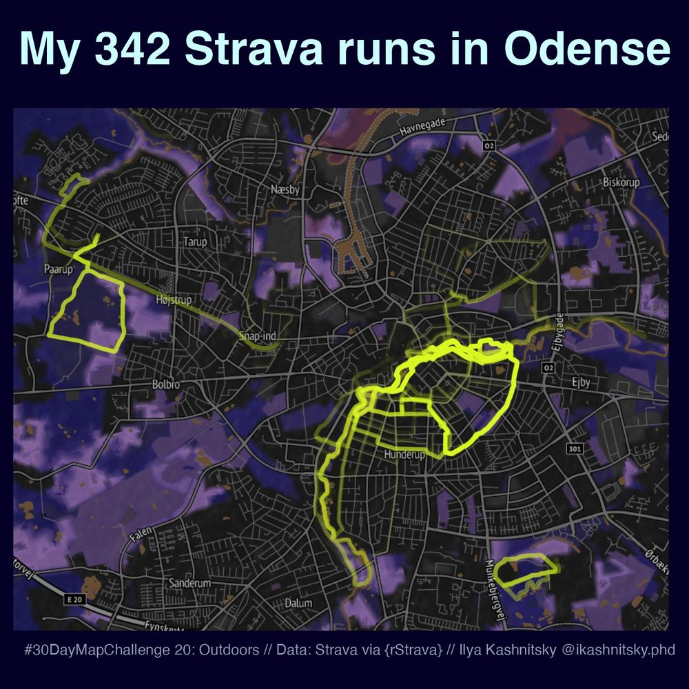
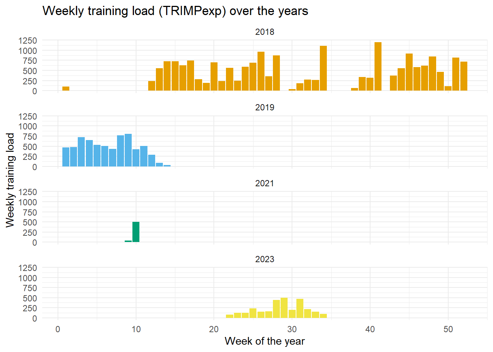
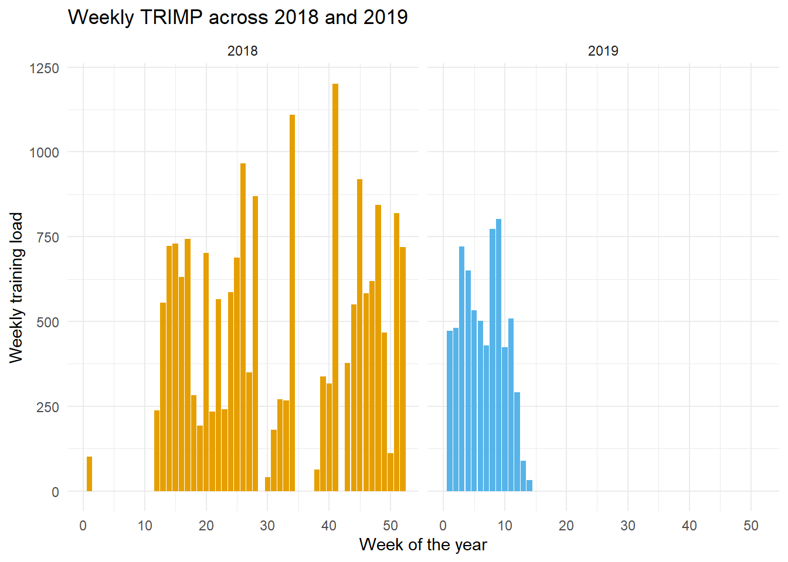
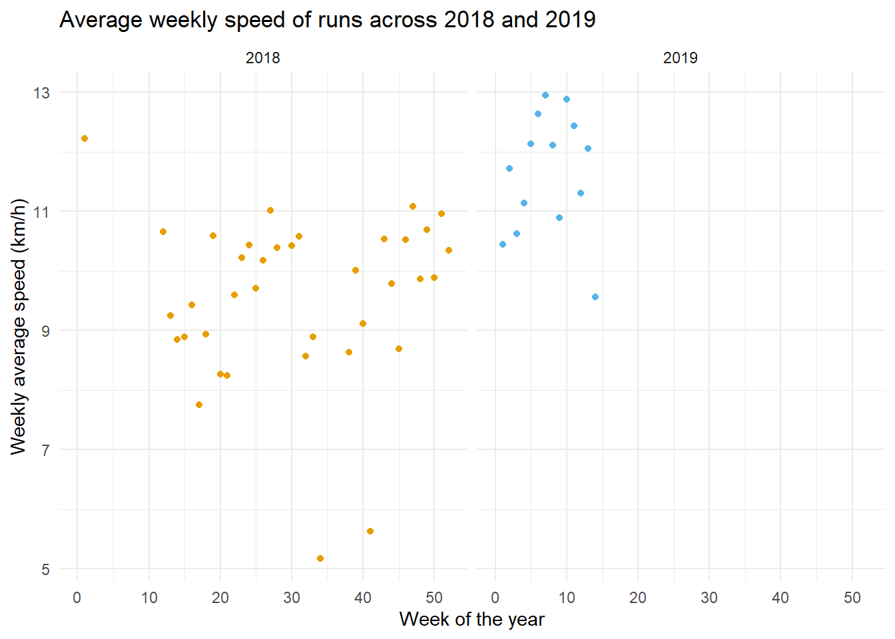
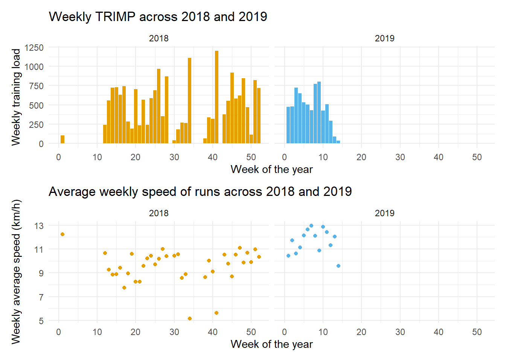

Code
# A gentle reminder to call install.packages("package_name_here") if you don't have any of these installed already!
library(tidyverse)
library(rStrava)
library(patchwork)With most of Australia closed between Christmas and New Years, I’ve found myself with some free time. This time for reflection has allowed me to consider potential goals for the coming year and, more importantly, my blasé attitude towards my physical health in the past year. 1
I’ve always enjoyed having some physical goals for the year ahead, and some recent family health problems have reminded me of significance of prioritising one’s physical health.
However, before setting specific goals I like to review my past training to help me understand where to start and how to map out the process of getting into better shape.
So, being the nerd that I am, I thought it would be fun to pull my running data from Strava using their API. Before getting started with this mini-project, I noticed that there wasn’t a clear pathway for R-users to obtain activity-level data from the Strava API in bulk - so hopefully this is useful to someone at some point! I am also somewhat underwhelmed by the analytic capabilities of the Strava app - especially if someone doesn’t want to pay $15/month in subscription fees!
Before moving forward I want to acknowledge that part of my motivation for re-engaging with the Strava API comes from Ilya Kashnitsky’s beautiful heatmap, pictured below. He created it by taking aggregate-level polylines from each of his activities and plotting them on an inset map - pretty cool and the code for it can be found here!

Back to the task at hand, though! First, we’ll need to load the following libraries which will form the foundation for most of our wrangling and analysis.
# A gentle reminder to call install.packages("package_name_here") if you don't have any of these installed already!
library(tidyverse)
library(rStrava)
library(patchwork)Now, to access the Strava API. For this, you will need to register for this ‘service’ here 2.
Once you’ve done this, you will be prompted to name your app and to provide a website URL for it. For the URL, I just used my Strava athlete profile 3. After inputting this information, you should be directed to a page with your ‘client id’ and your ‘client secret’ - these are both necessary for accessing the API and, Strava reminds you, shouldn’t be shared with anyone!
app_name <- "Put your app name here"
client_id <- "Put your client id here"
client_secret <- "Put your client secret here"Then, with this information we can create an API request! I’ll first create an object that we can call any time we need to make a request.
stoken <- httr::config(
token = strava_oauth(
app_name,
client_id,
client_secret,
app_scope = "activity:read_all",
cache = TRUE)
)However, one limitation of the standard API and the RStrava package is that most of the simpler functions only provide aggregated activity data. For instance, the following code creates an activity list with some topline stats from the 412 activities I’ve logged with Strava.
activity.list <- stoken %>%
get_activity_list() %>%
compile_activities()
head(activity.list)While it’s interesting to see items like the achievement count, average speed, and average heart rate for each activity, this information may not help us get an accurate measure of training load. One of the more well-known measures of training load is the TRIMP (training impulse) value, which estimates training load by multiplying the number of minutes the activity took by the average heart rate during it.
To get a better intuition for why I believe activity-level data to be important for measuring training load, consider two workouts: one a high-intensity sprint session focusing on 400m intervals with a long recovery; the other a typical easy ‘Zone 2’ aerobic workout. These two workouts could, in theory, be of the same duration, cover the same amount of distance, and even end up having similar average heart rates - but their training effects, and subsequently the toll they take on the body, are markedly different.
Therefore, I want activity-level data - which is typically collected at the interval of 1 second from most sports watches.
Fortunately, there’s a command that allows us to access this information.
get_streams(stoken,
id = "activity id here")However, getting the data for each of the 412 activities I have on Strava using this process would take some time. So, let’s automate it!
First, let’s create a smaller version of the dataset to make sure that we don’t have any errors before bombarding the API with bad requests.
# A smaller version of our dataset
mini <- head(activity.list, 5)
# Run a function from rows 1:5 of the mini dataframe, using the activity 'id' column as our index.
data <- lapply(1:nrow(mini), function(i) {
temp <- get_streams(stoken, id = mini$id[i])
})Fortunately we did this with a smaller dataset, because - using my data, at least - there’s already an error!
Error in get_streams(stoken, id = mini$id[i]) : Not Found (HTTP 404).A problem with this function is that there’s no way to know which of the 5 activities we requested caused this problem. Although, this provides us with the opportunity to use a command that I’ve found myself relying on a lot lately: tryCatch(). This function allows for two main possibilities:
In this instance, I want to understand what’s going wrong with the non-functional ‘id’ variables to make sure that there aren’t problems in the future and to prevent sending a tonne of bad requests to the API.
data <- lapply(1:nrow(mini), function(i) {
# 'tries' to run this function
tryCatch({
temp <- get_streams(stoken, id = mini$id[i])
},
# if an error occurs, provides the following output
error = function(error) {
cat("Error at index:", i, "\n")
cat("Error message:", conditionMessage(error), "\n")
return(NULL)
}
)
}) Error at index: 5
Error message: Not Found (HTTP 404). Outstanding! We now have the data from the first four activities, but we’re also able to see that activity 5 in this dataframe is causing the error. A brief inspection shows that the error is likely due to these activities being manually uploaded - a symptom of a broken Garmin watch, and missing several key variables of importance!
# Look at a valid row (4) and an invalid row (5)
mini[c(4,5),] %>%
select(id, manual, max_speed, start_latlng1)To confirm this hypothesis, we can run the function over some manually uploaded activities to see if any of them are able to produce a valid result.
manual_test <- activity.list %>%
filter(manual == "TRUE") %>%
head(., 5)
data <- lapply(1:nrow(manual_test), function(i) {
tryCatch({
temp <- get_streams(stoken, id = manual_test$id[i])
},
error = function(error) {
paste("Error at index:", i, "\n")
paste("Error message:", conditionMessage(error), "\n")
return(NULL)
}
)
}) %>%
bind_rows()
head(data)Not a single valid result. Well, at least that was an easy fix! Now, let’s create a dataframe which omits these activities, and to be proactive let’s remove activities without a set of latitude/longitude coordinates and heart rate data (as we might want to explore these later on), and any activities that aren’t runs.4
activities <- activity.list %>%
filter(manual != "TRUE") %>%
filter(!is.na(start_latlng1),
!is.na(max_heartrate)) %>%
filter(grepl("Run", sport_type))
mini.1 <- head(activities, 5)
# Run a function from rows 1:5 of the mini dataframe, using the activity 'id' column as our index.
data <- lapply(1:nrow(mini.1), function(i) {
temp <- get_streams(stoken, id = mini.1$id[i])
})We have now - in theory - some working code to pull activity-level data from Strava’s API. Let’s see what one of the elements from our dataset looks like.
temp <- get_streams(stoken, id = mini.1$id[1])
summary(temp) Length Class Mode
[1,] 5 -none- list
[2,] 5 -none- list
[3,] 5 -none- list
[4,] 5 -none- list
[5,] 5 -none- list
[6,] 5 -none- list
[7,] 5 -none- list
[8,] 5 -none- list
[9,] 5 -none- list
[10,] 5 -none- listHmmm - that’s not a particularly nice structure for analysis, so let’s tidy it up a little. First, we’ll transpose the set of lists and convert them to a tibble. 5
temp %>%
purrr::transpose() %>%
tibble::as_tibble()That’s a bit better, now at least we can begin to work with this data! The next step is keep the ‘type’ and ‘data’ columns and remove everything else, then we should unlist the data and convert 0-length lists to NA values. After this, we can perform some more tidying and add some important variables to make these activities identifiable in the future.
temp.data <- temp %>%
purrr::transpose() %>%
tibble::as_tibble() %>%
dplyr::select(type, data) %>%
dplyr::mutate(type = unlist(type),
data = purrr::map(data, ~ purrr::modify_if(.x, ~length(.) == 0, ~NA))) %>%
# With the data wrangled, let's transform it into a tidy format!
tidyr::spread(data = ., key = type, value = data) %>%
tidyr::unnest(cols = everything()) %>%
dplyr::mutate_at(vars(-latlng), ~ unlist(.)) %>%
tidyr::unnest_wider(latlng, names_sep = "_") %>%
dplyr::mutate(activity = 1,
id = mini$id[1])
head(temp.data)Perfect! We now have that all-important heart rate data, along with a few other useful variables for some later analysis!
We’re almost there, we just need to ask the API for this data and combine it. However, the next problem we face comes from Strava’s API architecture:

After filtering my activities, I still have to make 308 requests through the API, which means that we’ll have to create a function which knows to stop sending requests for a 15-minute period once we approach that 200 request limit, and once that time has passed can resume with the remaining requests.
Ideally, this function would be able to work with a request of any number of items, not just my 308. I’ve created something that should work for this task using a modulus operator and a Sys.sleep command. If you’re going to run it yourself, be mindful that this function will take 15 minutes per 180 activities6!
# First, create an empty list that will store each request
result_list <- list()
batches <- (nrow(activities) %/% 180) + 1
cases_per_batch <- nrow(activities) / batches
for (i in 1:nrow(activities)) {
Sys.sleep(if (i %% cases_per_batch == 1 &
i > 1) 900 else 0)
temp <- get_streams(stoken, activities$id[i])
data <- temp %>%
purrr::transpose() %>%
tibble::as_tibble() %>%
dplyr::select(type, data) %>%
dplyr::mutate(type = unlist(type),
data = purrr::map(data, ~replace(.x, length(.x) == 0, NA))) %>%
tidyr::spread(data = ., key = type, value = data) %>%
tidyr::unnest(cols = everything()) %>%
dplyr::mutate_at(vars(-latlng), ~ unlist(.)) %>%
tidyr::unnest_wider(latlng, names_sep = "_") %>%
dplyr::mutate(activity = i,
id = activities$id[i])
result_list[[i]] <- data
}
df <- result_list %>%
bind_rows()
# Now, I'm going to save this dataset, so I don't have to run this call again and waste 16 minutes of my life!
# save(df, file = "data/all_activities.RData")For quantifying training load, let’s use a modified version of the Training Impulse (TRIMP) formula (see Morton, Fitz-Clarke, and Banister 1990). This version incorporates an individual weighting factor and accounts for different resting and maximum heart rates. It also has a non-linear term to try to capture the phenomena that higher heart rates are more fatiguing / indicative of a higher training load.
Also, as mentioned before, rather than use the average heart rate method, we’ll create a measure for each observation of heart rate data. This means that we will need to create a few new variables in our dataset.
We can also use the activity ‘id’ variable to include some of the aggregated data for each activity.
# Select aggregated activity variables
activity.variables <- activity.list %>%
select(id, total_elevation_gain,
activity_distance = distance,
average_speed, max_speed,
date = start_date_local)
df1 <- df %>%
arrange(activity, time) %>%
left_join(activity.variables) %>%
group_by(activity) %>%
dplyr::mutate(activity_time = max(time),
d.time = time - dplyr::lag(time),
d.time = ifelse(is.na(d.time), 0, d.time),
rest_hr = 55,
max_hr = 190,
HRR = ((heartrate - rest_hr) / (max_hr - rest_hr)),
TRIMP = (d.time / 60) * HRR * (0.64*exp(1))^(1.92 * HRR),
TRIMP_session = sum(TRIMP, na.rm = T),
year = year(as.POSIXct(date)),
month = month(as.POSIXct(date)),
day = weekdays(as.POSIXct(date)),
week = isoweek(ymd_hms(date)))First, let’s create a modified version of the dataset to provide some general insights. Now that we have a more accurate version of activity-level training load, we can re-aggregate the data for plotting.
plotting_data <- df1 %>%
select(activity, date, activity_distance,
average_speed, max_speed, activity_time,
TRIMP_session, year, month, day, week) %>%
unique()Okay, now let’s create a plot to look at our training load over the years we have data available for. This will allow us to assess our consistency and see trends in our training.
plotting_data %>%
group_by(year, week) %>%
dplyr::summarise(weekly_TRIMP = sum(TRIMP_session, na.rm = T)) %>%
ggplot(aes(x = week, y = weekly_TRIMP, fill = factor(year))) +
geom_col() +
scale_fill_manual(values = ggokabeito::palette_okabe_ito()) +
theme_minimal() +
theme(
text = element_text(family = "Consolas"),
legend.position = "none",
legend.title = element_blank()
) +
labs(title = "Weekly training load (TRIMPexp) over the years",
x = "Week of the year",
y = "Weekly training load") +
facet_wrap(~ year, ncol = 1, scales = "fixed")
Well, that’s not great… where’s 2020 and 2022? In my defence, I did run throughout the back half of 2023 but didn’t record these sessions because my Garmin watch broke, and I haven’t gotten around to having it fixed yet. So that’s a good lesson: you can’t analyse or evaluate data that you don’t have!
Perhaps, it would be more useful to look at the data from 2018 and the start of 2019, where I was somewhat more consistent with my training. First, let’s re-plot the weekly training load data from 2018 and 2019, and then we can look at the average speed of all workouts each week during this time period, too. It might also be fun to use a slightly different ‘geom’ for each plot.
plot_trimp <- plotting_data %>%
filter(year == 2018 |
year == 2019) %>%
group_by(year, week) %>%
dplyr::summarise(weekly_TRIMP = sum(TRIMP_session, na.rm = T)) %>%
ungroup() %>%
ggplot(aes(x = week, y = weekly_TRIMP, fill = factor(year))) +
geom_col() +
scale_fill_manual(values = ggokabeito::palette_okabe_ito(c(1,2))) +
coord_cartesian(xlim = c(0, 52)) +
theme_minimal() +
theme(
text = element_text(family = "Consolas"),
legend.position = "none",
legend.title = element_blank()
) +
labs(title = "Weekly TRIMP across 2018 and 2019",
x = "Week of the year",
y = "Weekly training load") +
facet_wrap(~ year)
plot_trimp
plot_speed <- plotting_data %>%
filter(year == 2018 |
year == 2019) %>%
group_by(year, week) %>%
dplyr::summarise(weekly_TRIMP = sum(TRIMP_session, na.rm = T),
average_speed = mean(average_speed, na.rm = T)) %>%
ungroup() %>%
ggplot(aes(x = week, y = average_speed, colour = factor(year))) +
geom_point() +
scale_colour_manual(values = ggokabeito::palette_okabe_ito(c(1,2))) +
coord_cartesian(xlim = c(0, 52)) +
theme_minimal() +
theme(
text = element_text(family = "Consolas"),
legend.position = "none",
legend.title = element_blank()
) +
labs(title = "Average weekly speed of runs across 2018 and 2019",
x = "Week of the year",
y = "Weekly average speed (km/h)") +
facet_wrap(~ year)
plot_speed
It looks like there’s a relationship between consistent training and the average weekly speed of workouts. Hmmmm, who would have thought? However, to make this a little bit clearer we can plot these two figures together using the patchwork library.
plot_trimp + plot_speed + plot_layout(ncol = 1)
Not bad. While there’s plenty more analysis to undertake, this post is already much longer than anticipated due to the challenges of working with the Strava API, so I think I’ll leave it here for now and dive into this data in more detail later.
So, it’s clear that I’ve been terribly inconsistent with my aerobic training. However, I don’t record data for my resistance training anymore, so there’s no way to tell how inconsistent I’ve been with that.
For 2024, I have ideas of an ironman distance triathlon and my first 100 miler run floating around in my mind, but let’s start with the basics: consistency.
or perhaps the past few years…↩︎
This assumes that you already have a Strava account.↩︎
I assume this is a requirement intended for the more serious app developers, rather than the hobbyist analysts.↩︎
It appears that I have a few cross country ski activities and hikes in here!↩︎
I’m going to call each library in this tidying step, as we’ll be incorporating this code into a bigger function later on.↩︎
I use 180 requests instead of 200 to allow for some wiggle room, in case you need to make some changes to your code, or want to make another small request.↩︎
This can be calculated using the following formula: \[ ((heart\:rate - resting\:heart\:rate) / (max\:heart\:rate - resting\:heart\:rate)) \]↩︎
This can be calculated using the following formula: \[ TRIMP = (d.time / 60) * HRR * (0.64e ^{1.92 * HRR} ) \]↩︎
@online{ashton2023,
author = {Ashton, Luke},
title = {Analysis of {Strava} Data - and Training Load - in {R.}},
date = {2023-12-28},
url = {https://luke-ashton.netlify.app/posts/strava-api-analysis},
langid = {en}
}